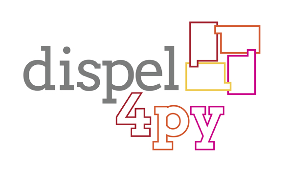
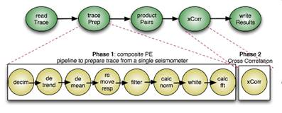

Appendix 4 – using dispel4py¶
Dispel4Py is a python library that allows workflows to be written that can easily scale to different sizes of computational resource, ranging from your own laptop, to a large parallel supercomputer. This means that you can devolve and test your workflow locally on your own machine before transferring the workflow to a much larger computer to process a large amount of data.
In seismology this could be particularly useful for performance calculations with very large data sets, such as noise correlation. Dispel4Py is used widely in the VERCE portal in the pre- and post-processing workflows that are implemented there. This toolbox is especially useful for any seismologist who is looking to speed up a data application.

Figure A3.1: The Dispel4Py logo.
A4.1 Installing Dispel4Py¶
Firstly please ensure that you have an up to data version of Python installed as described in appendix one. You can then install Dispel4Py and its dependencies (such as MPI) as described below.
Installing dispel4py: Dispel4py can be installed using the command,
pip install dispel4py
Full instructions for installing dispel4py can be found at,
Installing MPI and mpi4py (optional): If you wish to explore the parallel mapping of dispel4py to MPI you may want to install these on your machine. Different implementations of MPI are available, for example Open MPI or MPICH2. Depending on your operating system MPI can be installed through the software manager. You can then install mpi4py with the command:
pip install mpi4py
Full instructions can be found at:
A4.2 Using Disple4Py¶
A full tutorial describing how to create workflows and perform sequential and parallel processing using Dispel4Py can be found at the link below.
http://www2.epcc.ed.ac.uk/~amrey/VERCE/Dispel4Py/
For more information on the basic principles of Dispel4Py please see the following presentation.
http://www.verce.eu/Training/UseVERCE/2015-7-VERCE-dispel4py-basic.pdf
An advanced introduction for those who wish use Dispel4Py to create workflows for their own applications can be found at the link below.
http://www.verce.eu/Training/UseVERCE/2015-7-VERCE-dispel4py-advanced.pdf

Figure A3.2: An example of a workflow to perform a cross correlation of seismic noise data